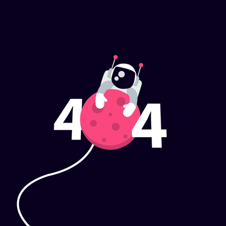

<section class="mt-48 md:mt-40 pb-12 relative bg-slate-100">
  <div
    class="-mt-20 top-0 bottom-auto left-0 right-0 w-full absolute h-20"
    style="transform: translateZ(0)"
  >
    <svg
      class="absolute bottom-0 overflow-hidden"
      xmlns="http://www.w3.org/2000/svg"
      preserveAspectRatio="none"
      version="1.1"
      viewBox="0 0 2560 100"
      x="0"
      y="0"
    >
      <polygon class="text-slate-100 fill-current" points="2560 0 2560 100 0 100"></polygon>
    </svg>
  </div>
  <section
    class="justify-between flex flex-col-reverse md:flex-row items-start px-4 md:px-0"
    dir="ltr"
  >
    
    <div class="w-full md:w-1/2 px-4 md:px-12 py-8 pt-32">
      <h2
        class="text-3xl font-semibold text-black mb-4 font-serif hover:shadow-slate-50 border-zinc-900"
      >
        Página no encontrada!
      </h2>
      <p class="text-lg text-black">Lo sentimos! La pagina solicitada no ha sido encontrado</p>
      <br />

      <button class="rounded-lg w-24 h-10 bg-blue-100 bg-center">
        <a href="http://localhost:4200/">Regresar</a>
      </button>
    </div>
  </section>
</section>
